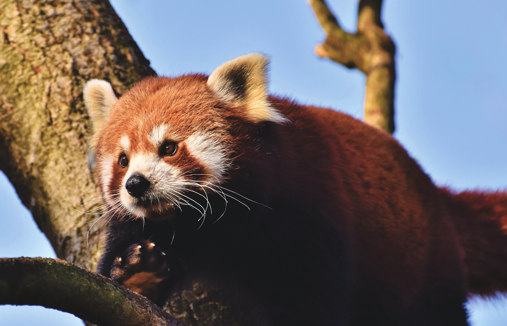

Use of a Mark in Bootstrap
Use Ctrl + p to Open the Print Dialogue Box
The cat is a domestic species of small carnivorous mammal. It is the only domesticated species in the family Felidae and is often referred to as the domestic cat to distinguish it from the wild members of the family.

Dog, domestic mammal of the family Canidae (order Carnivora). It is a subspecies of the gray wolf and is related to foxes and jackals. The dog is one of the two most ubiquitous and most popular domestic animals in the world (the cat is the other). It has lived with humans for more than 12,000 years.

The red panda ( Ailurus fulgens) is a carnivoran native to the eastern Himalayas and southwestern China. It is listed as Endangered on the IUCN Red List because the wild population is estimated at fewer than 10,000 mature individuals and continues to decline due to habitat loss and fragmentation, poaching, and inbreeding depression.
A raccoon's face has several markings that help it stand out. The most noticeable marking is the black "mask"—large black markings around each eye. They extend from the edge of the nose to the lower part of the cheek. In addition, raccoons have whitish patches on top of the eyes and around the nose. Raccoons have grayish-brown fur over most of their body, and their tails have four to six black rings.